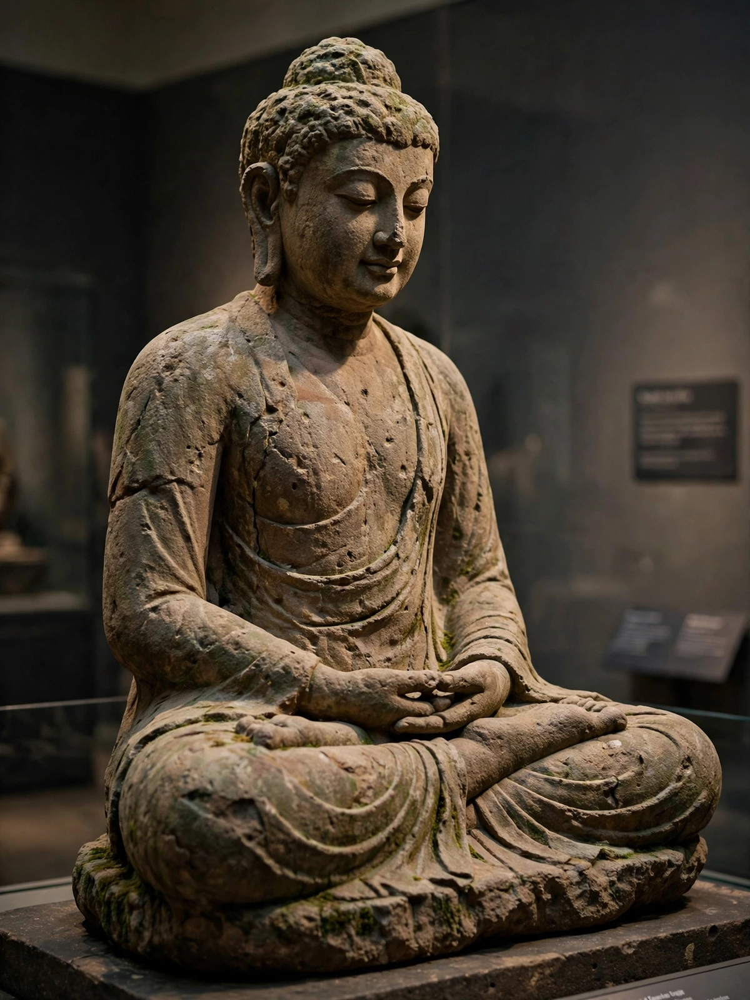

From Wikipedia, the free encyclopedia
| Gautama Buddha | |
|---|---|
| Born | Siddhartha Gautama, c. 563 or 480 BC, Lumbini |
| Died | c. 483 or 400 BC, Kushinagar |
| Known for | Founder of Buddhism; the Buddha ('Awakened One') |
| Key events | Great Renunciation; Enlightenment at Bodh Gaya; first sermon at Sarnath |

The Buddha (Sanskrit: 'Awakened One'), born Siddhartha Gautama, was a sramana teacher of the 6th or 5th century BC whose teachings founded Buddhism. Renouncing a sheltered princely life after encountering old age, sickness, death and an ascetic, he sought liberation first through extreme austerity, then through the 'middle way', attaining enlightenment meditating under the Bodhi tree. For 45 years he taught the Four Noble Truths and the Eightfold Path across the Ganges plain, founding an order (sangha) that carried his Dharma across Asia.
Traditional biographies — embellished over centuries — tell of a miraculous birth at Lumbini, the great renunciation at 29, enlightenment at Bodh Gaya, the first sermon ('setting in motion the wheel of Dharma') at Sarnath, and death (parinirvana) at Kushinagar after eating a final meal. His core teaching analyses suffering (dukkha) as arising from craving and ignorance, diagnosed through dependent origination, and treatable by the path of ethics, meditation and wisdom; his doctrine of anatta (no permanent self) distinguishes Buddhism sharply from other Indian paths. Dates are debated — scholarly consensus places him around 480–400 BC.